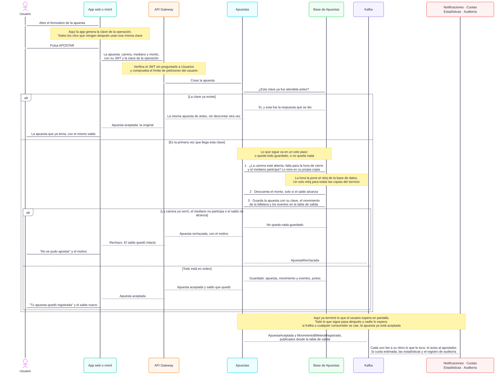

La Gran Liga de Apuestas de Medianos EIA.
Una propuesta de arquitectura para confirmar cada apuesta y no perder ningún EIA Coin.
Salchipapa Maker Racing S.A.S.
Propuesta de arquitectura · Implementación e integración de software, EIA
El escenario de la final
- 100.000
- usuarios conectados a la vez
- 10.000 / s
- apuestas en los últimos 30 segundos
- < 1 segundo
- para saber si la apuesta fue aceptada
Son los requisitos del enunciado. La capacidad está por validar con carga real.
Ninguna apuesta aceptada ni ningún movimiento de billetera puede perderse.
Arquitectura híbrida
Híbrida: una aplicación para el dinero, cinco servicios para lo demás.
| Opción | Por qué |
|---|---|
| Híbrida — la elegida | La apuesta y el descuento se guardan en un solo paso. Lo que no toca el dinero crece y falla por separado. |
| Un solo monolito | Si se cae o se actualiza notificaciones, se caen las apuestas. Y para el pico habría que agrandar todo. |
| Un servicio por capacidad | Separar billetera de apuestas obliga a reservar saldo y confirmarlo después: más pasos por la red y más formas de fallar. |
| Encolar y validar después | No se puede responder «aceptada» en menos de 1 segundo si todavía no se revisó el saldo ni el cierre. |
Servicios y responsabilidades
| Servicio | De qué se encarga |
|---|---|
| Apuestas | Recibe las apuestas, guarda los EIA Coins y paga los premios. |
| Usuarios | Registro, inicio de sesión, roles y bloqueos. |
| Carreras | Carreras, medianos participantes y resultados oficiales. |
| Notificaciones | Avisos por correo, push y dentro de la app. |
| Estadísticas | Histórico, reportes premium, cuotas estimadas y fraude. |
| Auditoría | Registro que no se puede modificar ni borrar. |
API Gateway: único punto de entrada. Verifica el JWT y limita las peticiones.
Diagrama general de arquitectura

Se lee de izquierda a derecha: quién usa la plataforma, API Gateway, servicios, bases de datos, mensajería y consumidores. La caja de borde rojo es donde está el dinero.
Secuencia de creación de una apuesta

- La app manda la apuesta con su JWT y la clave de la operación.
- El API Gateway verifica el JWT y el límite de peticiones.
- Apuestas mira si esa clave ya fue atendida.
- En un solo paso: revisa la carrera, descuenta si el saldo alcanza y guarda la apuesta, el movimiento y los eventos.
- Recién entonces responde «aceptada».
Fuera de la respuesta: los eventos, los avisos, las cuotas y las estadísticas.
Comunicación síncrona: apuestas y acceso
| De → a | Protocolo | Qué pide | Si no responde |
|---|---|---|---|
| App → API Gateway | REST sobre HTTPS | Todo lo del usuario | La app reintenta con la misma clave. |
| API Gateway → Usuarios | REST | Registro e inicio de sesión | Un reintento; las sesiones abiertas siguen. |
| API Gateway → Usuarios | REST | Claves públicas para verificar los JWT | Se usa la última copia guardada. |
| API Gateway → Apuestas | gRPC | Apostar, saldo, mis apuestas | «Intenta de nuevo». Nunca «aceptada» sin guardar. |
| Apuestas → Carreras | gRPC, por excepción | Una carrera que no tiene en su copia | Rechaza la apuesta. |
Comunicación síncrona: consultas y administración
| De → a | Protocolo | Qué pide | Si no responde |
|---|---|---|---|
| API Gateway → Carreras | REST | Carreras y medianos | Un reintento, luego la última copia. |
| Carreras → Apuestas | gRPC | Cuánto se ha apostado, para el operador | El último valor, marcado como aproximado. |
| API Gateway → Estadísticas | REST | Reportes premium | El reporte del día anterior. |
| API Gateway → Auditoría | REST, solo lectura | Historial de una carrera | Se entrega por partes. |
| API Gateway → Usuarios / Carreras | REST, red privada | Administración | No se reintenta sola; la repite el operador. |
| Notificaciones → Correo y push | HTTPS | Entregar el mensaje | Se reintenta desde RabbitMQ. |
Comunicación asíncrona: eventos en Kafka
Nombres en español y en pasado: son hechos que ya ocurrieron.
| Evento | Lo publica | Lo leen | Clave |
|---|---|---|---|
| CarreraAbierta | Carreras | Apuestas, Notificaciones, Estadísticas | carreraId |
| CarreraCerrada | Carreras | Apuestas, apps, Estadísticas, Auditoría | carreraId |
| ApuestaAceptada | Apuestas | Estadísticas, Auditoría, Cuotas, Notificaciones | carreraId |
| ResultadoPublicado | Carreras | Pago de premios, Notificaciones, Estadísticas, Auditoría | carreraId |
| MovimientoBilleteraRegistrado | Apuestas | Auditoría, Estadísticas, Notificaciones | usuarioId |
| LiquidacionCalculada | Pago de premios | Auditoría, Estadísticas | carreraId |
| LiquidacionFinalizada | Pago de premios | Carreras, Notificaciones, Auditoría | carreraId |
Todo evento lleva identificador único, tipo, versión, fecha y los datos del hecho.
Mensajería asíncrona: Kafka y RabbitMQ
Kafka hechos que varios leen y se pueden releer
apuestas.aceptadas24 particiones · clave carreraIdCada grupo lleva su propia posición de lectura.
RabbitMQ tareas que se reparten y se reintentan
liquidacionexchange directliquidacion.loterouting keyq.liquidacion.lotescola → procesos de pagoConfirmación manual, reintentos con espera y cola aparte para los mensajes con problemas.
Hecho que varios leen y quiero releer → Kafka. Tarea que alguien ejecuta y puede fallar → RabbitMQ.
Idempotencia: una apuesta, un solo cobro
| Operación | Qué impide que se repita |
|---|---|
| Crear la apuesta | La clave de la operación no se puede repetir para un mismo usuario. |
| Descontar el saldo | Cada movimiento lleva su identificador, y se descuenta solo si el saldo alcanza. |
| Pagar un premio | El identificador incluye la apuesta y la versión del resultado. |
| Recibir un evento repetido | Cada consumidor registra los eventos que ya procesó. |
Datos y modelos de consistencia
| Dónde | Qué guarda |
|---|---|
| Apuestas | Base relacional propia y dedicada: apuestas, saldos, movimientos y los eventos por publicar. |
| Usuarios, Carreras, Notificaciones | Una base cada uno, en una máquina compartida al principio. |
| Estadísticas | Almacén de histórico y una base pensada para reportes. |
| Auditoría | Almacenamiento que no permite modificar ni borrar, cinco años. |
Consistencia fuerte: aceptar la apuesta, descontar el saldo, el cierre y el cálculo de los premios.
Consistencia eventual: cuotas estimadas, estadísticas, reportes y avisos.
Escalabilidad para el pico de apuestas
apuestas en 30 segundos,
respondiendo en menos de 1 segundo.
Antes: la capacidad se prepara media hora antes. El calendario de carreras se conoce.
El atasco menos obvio: no llevamos el total apostado mientras la carrera está abierta. Las cuotas se calculan aparte, leyendo Kafka.
El cierre: lo decide el reloj de la base de datos, no el de cada copia del servicio.
Después: los premios se pagan en lotes de 1.000. Meta: menos de 15 minutos.
El saldo nunca queda negativo: se descuenta solo si alcanza.
Seguridad y control de acceso
| Acceso | Qué hay ahí |
|---|---|
| Público | El API Gateway y el filtro de tráfico. Nada más. |
| Privado | Los seis servicios, las bases de datos, Kafka, RabbitMQ y el almacenamiento. |
| Administración | Red privada, doble factor y permisos por rol. |
- JWT de corta duración, y cada servicio revisa además sobre qué dato se opera.
- Cuatro roles: apostador, operador, administrador y auditor. El auditor solo lee.
- Cifrado en tránsito y en reposo. Las credenciales nunca en el código.
- Límites de peticiones por usuario, y detección de bots y de cuentas que comparten dispositivo.
- Toda acción de administración queda registrada. Corregir un resultado exige dos personas.
Costos y escalado según la demanda
| Decisión | Por qué ahorra |
|---|---|
| Seis servicios, no veinte | Cada servicio extra cuesta base de datos, despliegue, monitoreo y atención. |
| Capacidad según el calendario | El pico se paga unas horas al mes, no todo el mes. |
| Los procesos de pago solo existen mientras trabajan | Son unos diez minutos después de cada carrera. |
| Una máquina para las bases pequeñas | Tres máquinas pequeñas cuestan casi el triple que una mediana. |
| Todo administrado por el proveedor | El costo real de esto es el equipo que lo mantiene, no las máquinas. |
| El histórico, en almacenamiento barato | En la base de datos solo se quedan 90 días. |
«No quiero pagar una infraestructura de Netflix para una carrera de cinco medianos.»
Manejo de fallos y recuperación
| Se cae | ¿Se puede apostar? |
|---|---|
| Notificaciones | Sí. Los avisos esperan en Kafka y salen después. |
| Apuestas o la billetera | No. Sin poder descontar, no se acepta ninguna apuesta. |
| Kafka | Sí. Los eventos esperan en la tabla de salida. |
| RabbitMQ | Sí. Se atrasan los premios y los avisos; nada se pierde. |
| Carreras | Sí, para las carreras ya abiertas. |
| Usuarios | Sí, para quien ya tiene su sesión. |
Se puede degradar lo que informa; no se puede degradar lo que decide sobre el dinero.
ADR-001 · Arquitectura híbrida
Contexto
El pico es exigente, el dinero no admite errores y el equipo es pequeño.
Opciones
Un solo monolito · un servicio por capacidad · encolar y validar después · híbrida.
Decisión
Una aplicación con apuestas, billetera y premios; cinco servicios alrededor, detrás de un API Gateway.
Se gana
El dinero queda consistente sin coordinar servicios; crece solo lo que lo necesita; una caída de notificaciones, estadísticas o auditoría no afecta a nadie.
Se sacrifica
Si Apuestas se cae, no hay apuestas; su base de datos concentra la escritura; exige disciplina para que las partes internas no se mezclen.
Aceptada · Una decisión, una página
ADR-002 · Transacción de apuesta y saldo
Contexto
Nadie puede gastar dos veces sus EIA Coins, ninguna apuesta aceptada se puede perder y la gente reintenta cuando la app tarda.
Opciones
Reservar saldo y confirmar después · descontar más tarde · un solo paso en la misma base de datos.
Decisión
La apuesta, el movimiento, el saldo y los eventos se guardan todos juntos o ninguno.
Se gana
Es imposible gastar dos veces o quedar en negativo; los reintentos no cobran de nuevo; el caso B deja de ser un dilema.
Se sacrifica
Apuestas y billetera no se despliegan ni crecen por separado, y comparten su suerte si hay una falla.
Aceptada · Una decisión, una página
ADR-003 · Mensajería con Kafka y RabbitMQ
Contexto
Los mismos hechos le interesan a cuatro consumidores y hay que poder releerlos; además hay millones de pagos que repartir y avisos que reintentar.
Opciones
Solo Kafka · solo RabbitMQ · ninguno, todo con llamadas directas · los dos con una frontera estricta.
Decisión
Kafka lleva los hechos; RabbitMQ lleva las tareas.
Se gana
Historial y relectura para auditoría y estadísticas; reintentos por mensaje sin frenar la cola; más procesos de pago sin reconfigurar nada.
Se sacrifica
Dos tecnologías que aprender, vigilar y pagar.
Aceptada · Una decisión, una página
Evolución para multiplicar la capacidad por 100
Hoy: esta arquitectura, sobre servicios administrados y con la capacidad preparada según el calendario.
| Cuando pase esto | Haríamos esto |
|---|---|
| Las apuestas tardan más de lo aceptable | Agrandar la máquina, más copias de lectura, más particiones. |
| El pago de premios se acerca a los 15 minutos | Separarlo a su propia máquina y, después, a su propio servicio. |
| Más de 50.000 apuestas por segundo sostenidas | Separar la billetera, con reserva de saldo. |
| La máquina ya no se puede agrandar | Repartir los datos en varias bases, por carrera y por usuario. |
Conclusiones de la arquitectura
Cuatro clics siguen siendo una sola apuesta.
Notificaciones, estadísticas y auditoría pueden atrasarse sin frenar a nadie.
La capacidad se prepara con el calendario; el gasto sigue a la carga.
Siguiente paso Probar el pico de apuestas, los reintentos al mismo tiempo y una falla a mitad del pago de premios.